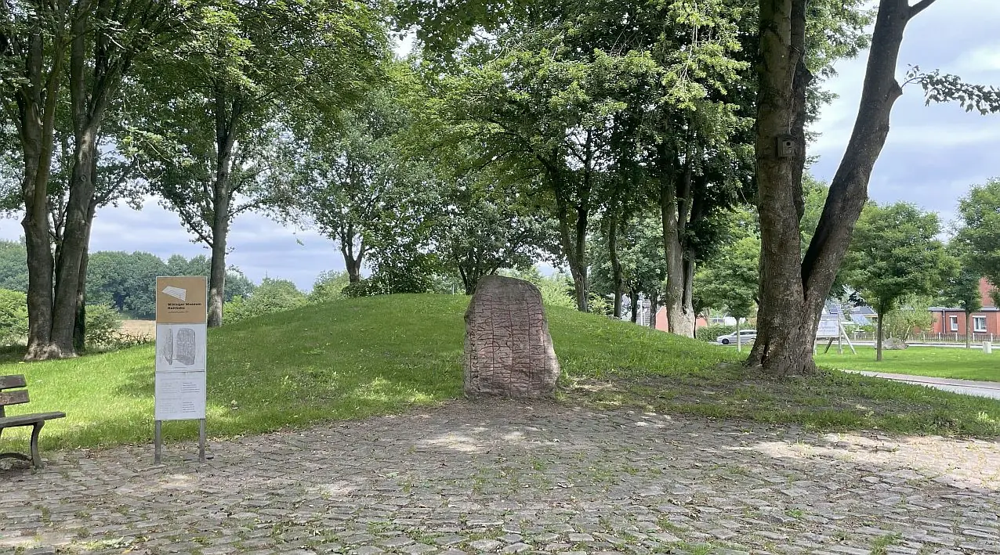
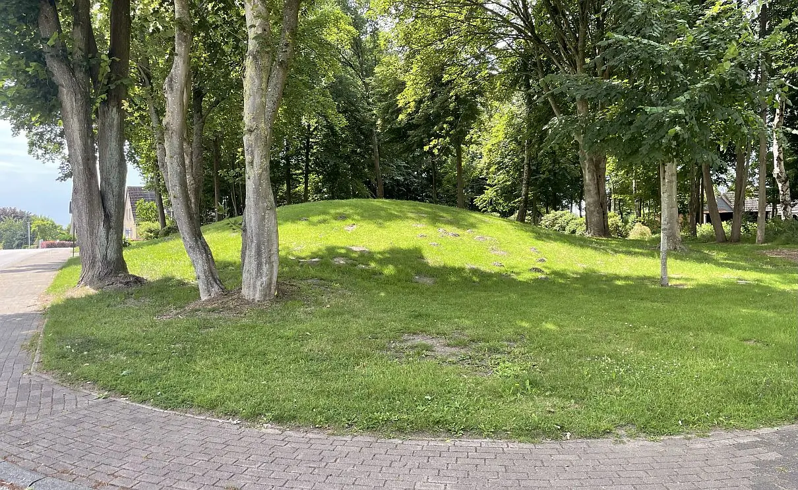
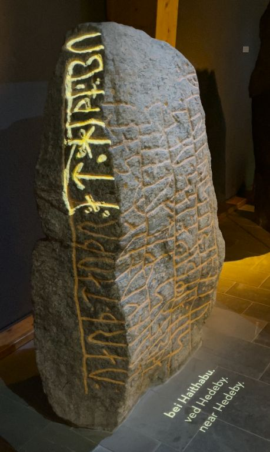

Skarthi-Stein
Grobkörniger Granit mit zahlreichem großen, roten
und schwarzen Korn
Höhe über der Erde: 158 cm
Größte Breite: 114 cm
Größte Dicke: 38 cm
Runenhöhe: 14,3 - 22,5 cm
Runeninschrift :
König Sven setzte diesen Stein für Skarthi, seinen Gefolgsmann, der nach Westen gefahren war,
aber nun den Tod fand
bei Haithabu
Skarthi-Stein
Der Runenstein wurde 1857 von dem Steinmetzen Petersen aus Busdorf an dem alten Landweg von Schleswig nach Rendsburg gefunden, und zwar an einer Stelle, an der diese Straße - südlich von Busdorf - zwischen zwei Grabhügeln hindurchführt. Diese Grabhügel hatten den Namen "Twebargen", und unmittelbar am Fuße des westlichen der beiden Hügel fand man den Stein mit Sand und Geröll bedeckt. Die Schriftseite war nach unten gekehrt.
Nachfolgend wird der Grabungsbericht von Wilhelm Andreas Hermann Splieth (*10.10.1862 - 10.02.1901, deutscher Prähistoriker) über die Untersuchung der Anlage im Jahre 1889 wiedergegeben:
Dem glücklichen Umstand, dass Herr Petersen die Schriftzeichen als solche erkannte, ist die Erhaltung des Steins zu verdanken. Derselbe wurde von der dänischen Regierung angekauft und am Hügel, von welchem man ihn schon entfernt hatte, wieder aufgerichtet. Auch der Hügel ging in den Besitz der Regierung über und wurde durch einen Wall von Acker und Landstraße geschieden. Als im Frühling des Jahres 1889 eine Bepflanzung des Hügels vorgenommen werden sollte, erbat die Direktion des Museums vaterländischer Altertümer zu Kiel von der königlichen Regierung die Erlaubnis, denselben vorher untersuchen zu lassen. Es erschien dies um so mehr nöthig, als bei der geringen Höhe des Hügels die Gefahr nahe lag, dass etwaige Alterthümer schon bei Grabungen für die Anpflanzung und später durch hinabdringende Baumwurzeln zerstört werden konnten. Die Untersuchung wurde in der Zeit vom 5. - 7. April ausgeführt und zwar in der Weise, dass die ganze Erdmasse des Hügels in parallelen Bänken von 2 m Breite bis auf den Urboden ausgegraben wurde.
Der mit Heidekraut und Gras bewachsene Hügel hatte einen Durchmesser von 16 - 18 m und eine Höhe von ca. 2 m; seine Form glich der eines flachen Kugelabschnitts, doch war die Oberfläche gegen die Mitte hin abgeplattet. Die ursprüngliche kreisrunde Grenzlinie war durch die Anlage des Walles gestört.
Der Hügel war aus schwarzgrauer steinfreier Erde errichtet, die aus nicht geringem Umkreis von den Feldern zusammengebracht sein muss, da sie dem Anschein nach nur aus Humus besteht. Der Urboden ist gelber, oft kiesiger oder lehmiger Sand. Der Hügel enthielt keine Steine. Das erste Anzeichen einer Grabanlage gewährte eine nur 3 cm dicke Schicht feinen weißen Sandes, die in der Wand des Hügels hervortrat. Im Verlauf der Arbeit zeigte es sich deutlich, dass dieser Sand eine kreisrunde Fläche von 3 m Dm. bedeckte. Die Vermuthung, dass unter dieser das Grab zu suchen sei, wurde dadurch bestärkt, dass die Sandschicht sich gegen die Mitte hin senkte. Und in der That zeichnete sich im gelben Sande des Urbodens ein längliches Viereck ab, welches die Ausdehnung einer Grube bezeichnete, die 50 cm tief in den Urboden hineingegraben war. Die Länge derselben betrug 2,30 m, die Breite 1,20 m. Ungefähr in der Mitte, noch in der Höhe des Urbodens, lagen vier kopfgroße Steine nebeneinander. In dieser Grube stand ein hölzerner Sarg, leider so zusammengesunken und vermodert, dass an eine vollständige Hebung desselben nicht zu denken war. Von der hier bestatteten Leiche waren nur geringe Reste vorhanden. Sie waren mit dem Deckel und dem Boden des Sarges zu einer weichen bräunlichen Masse zusammengepresst und so weich und brüchig, dass nur kleine Stücke aufgehoben werden konnten. Am besten war, wie gewöhnlich, der Schmelzbelag der Zahnkrone erhalten. Der Kopf lag im Südwesten, die Füße im Nordosten. Aus den in möglichst großen Stücken aufgenommenen Resten des Sarges wurde im Museum zu Kiel ein handgroßer Lederfetzen herausgeschält, der zierliche eingepresste Verzierungen zeigt, welche Aehnlichkeit mit Flechtwerk haben. Ob das Stück zu dem Gewand des Toten gehört, ist fraglich; es kann ebenso wohl von einer Tasche oder einem ähnlichen Gegenstand stammen. Beigaben wurden nicht gefunden. An der sw. Längswand des Sarges lag ein kleines 6,2 cm langes eisernes Stäbchen, welches in eine Spitze ausläuft und Aehnlichkeit mit einem Pfriemen hat. Es ist von einer fest anhaftenden gelblichen Masse umgeben, welche nach einer gefälligen Untersuchung des Herrn Prof. Dr. Emmerling aus phosphorsaurer Thonerde besteht.
Der Sarg bestand, wie eine von Herrn Dr. E. Rostrup, Docent an der Landwirtschaftlichen Hochschule in Kopenhagen, gütigst vorgenommene Untersuchung ergeben hat, aus Eichenholz. Dort, wo die Verhältnisse der Erhaltung günstig waren, hatte dasselbe eine Dicke von 2 - 3 cm; an andern Stellen war ein nur 2 mm dünner schwarzer Streifen übrig, der bis auf wenige der Untersuchung unterzogene Stückchen zerfiel. Am Kopfende war das Holz spurlos vergangen. Der Sarg war durch eiserne Nägel zusammengehalten, welche sich zum größten Theil in ihrer ursprünglichen Lage erhalten hatten. Aus ihrer Stellung ergibt sich, dass der Sarg die Form einer viereckigen Kiste hatte; dieselbe war 2 m lang, am Fußende 50 cm, am Kopfende 55 cm breit. Die ursprüngliche Höhe war nicht zu bestimmen, da die oberen Nägel herabgesunken waren. Es sind 28 Nägel gefunden, die fast alle von Resten des Holzes umhüllt sind, welches durch Eisenoxyd fest geworden und braunroth gefärbt sind. Die gut erhaltenen Exemplare sind 10 cm lang, haben einen viereckigen Querschnitt und enden in einem 2, 5 cm im Durchmesser haltenden flachen Kopf. Die meisten Nägel, 22, lagen wagerecht, hatten also dazu gedient, die Seitenwände mit dem Deckel, dem Boden und den Querbrettern zu verbinden; sechs waren von oben durch den Deckel in die senkrechten Bretter getrieben. Zu erwähnen ist noch, dass der Sarg durch ein Dutzend kleiner Steine von Faustgröße hier und da gestützt war. ...
...Der anfangs erwähnte Hügel auf der anderen Seite des Weges ist vor etwa 50 Jahren abgetragen. In demselben soll ein aus Felsblöcken errichtete Grabkammer gefunden sein, in der u. A. eine goldene Tuchnadel lag. Eine Untersuchung des Platzes, welche in der Hoffnung ausgeführt wurde, auch hier unter dem Boden ein Grab des jüngeren Eisenalters zu finden, verlief resultatlos.
Der Runenstein blieb bis vor kurzem an seinem wohl ursprünglichen Platz, am Fuße des noch erhaltenen Grabhügels, auch wenn er im Jahre 1893 auf dem Hügel errichtet und die Runenzeichen mit roter Ölfarbe ausgemalt wurden. Aus Gründen des Denkmalschutzes wurde er inzwischen ins Wikinger-Museum Haithabu verbracht. Statt dessen wurde eine originalgetreue Kopie an dem historischen Platz aufgestellt. Der zweite Grabhügel ist heute nicht mehr erhalten, da er, wie es im Bericht von Splieth deutlich wird, etwa um 1840 abgetragen wurde.
Skarthi, der wahrscheinlich mit seinem Herrn in England gekämpft hat, muss zum König in einer engen persönlichen Bindung gestanden und sich außerordentlicher Wertschätzung erfreut haben, da der König selbst den Stein errichten ließ. Bei dem König dürfte es sich um Sven Gabelbart handeln, so dass der Stein in die letzten Jahre des 10. Jahrhunderts gehört. Welches historische Ereignis den Hintergrund für den Tod von Skarthi bildet und den König Sven persönlich nach Haithabu brachte, ist nicht mit Sicherheit zu bestimmen.
Aktuelle Fotos des Originalstandortes des Runensteins beim Grabhügel in Busdorf - Fotos vom 12.07.2025




Hier auch aktuelle Fotos des originalen Runensteins aus dem Wikinger Museum Haithabu


der Inschrift des Runensteins im Wikinger Museum Haithabu